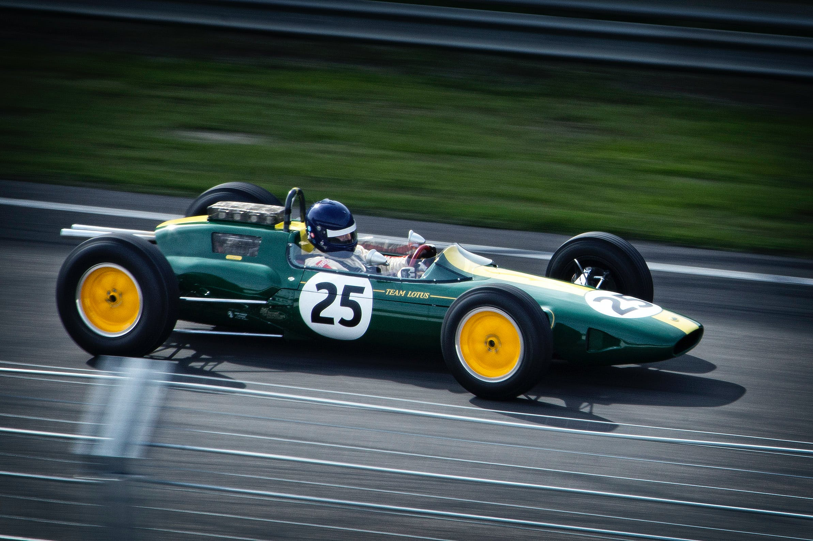

En Prestijli Otomobil Yarışı: Formula 1 Hakkında Bilmeniz Gerekenler
Formula 1 2023 için hazırlıklar başladı ve sezonun 5 Mart 2023'te başlayacağı duyuruldu.
Sıkı yarışseverler, Formula 1'in tarihini neredeyse A'dan Z'ye bilir.Yeni sezonun başlaması için günler sayılırken hem
yarışseverlerin bilgilerini tazelemek hem de yeni başlayanlar için Formula 1'i tanıtmak istedik.
Formula 1 Ne Zaman Başladı?

Formula 1’in tarihi, 1920’li yıllarda düzenlenmeye başlayan Avrupa kökenli Grand Prix yarışlarına kadar
uzanıyor. Araya 2. Dünya Savaşı girdiği ve Avrupa’nın neredeyse her ülkesi savaşa bir şekilde dahil olduğu için
1940’lı yıllarda yarışlar yapılamadı. Savaşın bitmesi ve yaraların sarılmasından sonra ise 1950 yılında ilk yarış
İtalya’da düzenlendi ve o günden bu yana devam ediyor.
1950 yılında düzenlenen ilk şampiyonanın galibi, Alfa Romeo’nun pilotu İtalyan Giuseppe Farina oldu.
Farina’nın takım arkadaşı Juan Manuel Fangio ise 1951, 1954, 1955, 1956 ve 1957 yıllarında düzenlenen
Formula 1 şampiyonalarını birinci sırada bitirmeyi başardı. Fangio’nun hala bu başarısı geçilememiştir.
Kısacası Fangio için ilk 10 yılı domine eden isim diyebiliriz.
Bunun dışında iki ayrı dominasyon dönemi daha yaşandı. 1980’li ve 1990’lı yıllar boyunca McLaren ve
Williams takımları tarafından Formula 1 domine edildi. McLaren, Alman ve Japon üreticilerin ürettiği motorlar
ile mühendisliği birleşitirdi. Williams ise Avrupalı, Japon ve Kuzey Amerikalı üreticilerin motorlarını kullandı. İki
marka toplam 16 sürücüler ve 16 üreticiler şampiyonluğunu paylaştı.
Bir diğer dominasyon dönemi ise 2000’lerin başında yaşandı. Ferrari, güçlü motorları ve tasarımından aldığı
güç ile 2000, 2001, 2002, 2003, 2004 ve 2005 yıllarında markalar ve pilotlarda şampiyon oldu. Michael
Schumacher’in efsane olarak anılmasını sağlayan bu dönem ile Ferrari hem rakiplerine büyük bir gözdağı
verdi hem de teknolojisinin ne kadar güçlü olduğunu gösterdi.
Formula 1 için centilmenler yarışıdır diyebiliriz. Çeşitli kuralların eşit olarak uygulandığı ve kimsenin
ayrıcalığının olmadığı bir yarış. Bu nedenle çok üst düzey bir teknoloji ya da muhteşem ötesi bir yarış pilotu
çıkmadığı sürece Formula 1 şampiyonasının domine edilmesi kolay değil. Elbette bunu başaran markalar ve
pilotlar oldu. Ancak bunda hem markaların üstün motor ve tasarımları hem de pilotların insan ötesi gayret ve
yeteneği etkili oldu.
F1 Programı
Formula 1 hafta sonu programı üç günden ve beş seanstan oluşuyor. Hafta sonu heyecanının ilk günü olan cuma 60'şar
dakikalık iki ayrı serbest antrenman seansı gerçekleştiriliyor. Cumartesi günü ilk olarak 60 dakikalık üçüncü serbest
antrenman seansı yapılırken, günün devamında sıralama turu heyecanı yaşanıyor. Sıralama turu seansı Q1, Q2 ve Q3
olmak üzere üç sekanstan oluşuyor. 18 dakikalık Q1'de ve 15 dakikalık Q2'de en yavaş beşer pilot eleniyor, 12 dakikalık
Q3'te ise 10 pilot nihai sıralama için mücadele ediyor. Hafta sonunun son seansı ise pazar günü yapılan yarış oluyor.
Formula 1 Araç Kuralları
Formula 1'in çok çeşitli kuralları bulunuyor.Bunlardan en önemlisi ise arabalar ile ilgili.Formula 1'in arabalar
ile ilgili bazı kuralları şöyle:
1600 cc hacme ve V6 silindir yapısına sahip olan motorlar kullanılmalı
Motorlar 15000 devir yapmalı
Ulaşabildikleri beygir gücü; minimum 750, maksimum 800 HP olmalı
Motor, çelik ve genellikle halk arasında döküm olarak anılan dökme demir ile üretilmeli
Motorların üretebileceği maksimum tork ile ilgili herhangi bir sınır bulunmuyor
Araçlar tek kişilik ve tekerlekleri açıkça dizayn edilmeli
Araçlar minimum 743 kilogram olmalı
Yarı otomatik vites kullanılmalı
Bunun dışında Formula 1’in yarış kuralları da bulunuyor. Dünyanın en büyük yarış organizasyonlarından biri
olması nedeniyle Formula 1, tahmin edebileceğiniz gibi çok çetrefilli yarış kurallarına sahip.
Formula 1 Yarış Kuralları
Formula 1 yarışlarında sıralamaya göre pilotlar puan alır ve aldıkları puan, takımlarının hanesine de eklenir.
Böylece takımlar ve pilotlar şeklinde iki farklı puan türü oluşur. Bir Grand Prix’i 1. sırada bitiren pilot 25, 2.
sırada bitiren pilot 18, 3. sırada bitiren pilot 15, 4. sırada bitiren pilot 12, 5. sırada bitiren pilot 10, 6. sırada
bitiren pilot 8, 7 sırada bitiren pilot 6, 8. sırada bitiren pilot 4, 9. sırada bitiren pilot 2 ve 10. sırada bitiren pilot 1
puan kazanır. Bunun dışında en hızlı turu atan pilot, ilk 10 içerisinde yer alması durumunda ekstra 1 puan kazanır.
Yarış boyunca pilotlar en fazla 110 kilogram yakıt tüketebilir. Normalde litre cinsinden hesapladığı için kilogram
denmesi size garip gelmiş olabilir ama kural bu şekilde geçiyor. Bunun dışında yarış ile ilgili çok sayıda teknik kural
bulunuyor.
Pole Pozisyonu
Pole pozisyonu yarışlara en öne başlanan yerdir, yani ilk sıradır. Yarışta ilk sırayı almak için pilotlar sıralama
turlarına çıkar ve en iyi dereceyi alan pilot yarışa pole pozisyonunda başlar.
"Pole pozisyonu" terimi; at yarışında, yarışa en öndeki yuvadan başlayan atı belirtmek için kullanılan ifadeden gelmektedir.
Yarış İçi Bilinmesi Gerekenler
DRS (Drag Reduction System) ya da Türkçesiyle Sürüklenmeyi Azaltıcı Sistem aracın arka kanadındaki parçanın açılarak
yere baskı kuvvetinin azaltılmasını amaçlar.Daha etkili bir hızlanma sağlamayı hedefleyen bu sistem özellikle geçişlerde
epey işe yarar.Sıralama turlarında yarış boyunca, yarış gününde ise belirlenen yerlerde kullanılan DRS sistemi geçişleri
artırıp F1 yarışlarını daha eğlenceli hale getirmeyi hedefler.
Pilotların zaman turu atmak için piste çıktıkları ve nispeten yavaş seyrettikleri çıkış turuna "out lap" denir.
Yapılan hızlı tur denemesi "hot lap" olarak adlandırılırken, pit'e girmek için atılan sonraki tura ise "in lap" denir.
F1'de otomobillerin özellikle viraj girişlerinde denge problemi yaşamaları durumunda kaydıkları gözlenir. Otomobillerin
arka lastiklerde tutuş kaybı yaşayarak arkadan kayması "oversteer" ve ön lastiklerde tutuş kaybı yaşayarak önden kayması
"understeer" olarak adlandırılır.
Yarışlar sırasında bir rakibi geçmek "overtake" olarak adlandırılır.
F1 takımlarının rakiplerini geçmek için kullandıkları pit stop stratejileri "undercut" ve "overcut" olarak adlandırılır.
Eğer bir otomobil gerideyse ve rakibini pist üstünde geçemiyorsa erken pit stop tercihi ile "undercut" yapmış olur.
Benzer şekilde rakibin pit stop'undan sonra hızlı turlar atarak daha geç pit stop yapılmasına ise "overcut" denir.
DNF (Did Not Finish) bir otomobilin yarışı bitiremediği anlamına gelir. Yarışa başlayamayan bir otomobil DNS (Did Not Start)
ve yarıştan ihraç edilen bir otomobil ise DSQ (Disqualified) şeklinde isimlendirilir.
F1'de Pilot Ceza Puanı
FIA tarafından uygulanan pilot ceza sistemi, pilotların yarışlar sırasında tehlikeli olabilecek ya da kural dışı davranışlar
(kazaya sebebiyet verme, güvenlik aracı arkasında hız yapma, sarı bayraklara uymama gibi) sergilemesini engellemek için oluşturulmuştur.
Pilotlar bilerek ya da bilmeyerek bu tip davranışlar sergiledikleri zaman ceza puanı alırlar. 12 aylık zaman dilimi içinde
12 ceza puanı alan pilotlar otomatik olarak bir yarıştan men edilirler.
Formula 1 Lastik Çeşitleri
Pirelli Formula 1 lastikleri, her yıl kıyasıya rekabete sahne olan bu motor sporları mücadelesinde en önemli
faktörlerden biridir. Pilotların her yarışta birçok strateji belirlemenin yanında en doğru lastik seçimini
yapması gerekir. F1 yarışları için 2011 yılından bu yana tek lastik tedarikçisi İtalyan Pirelli markasıdır. Takımlar,
Pirelli Formula 1 lastiği seçenekleri içerisinden her yarış öncesinde dilediği lastikleri tercih edebilmektedir.
Formula 1 Lastik Seçimi Neden Önemli?
Pilotlar tarafından farklı farklı Pirelli Formula 1 lastikleri kullanılmasının nedeni, pist ve hava koşullarına göre
en uygun performansı sağlamaktır. F1 yönetimi ve Pirelli, her yarış için üç farklı kuru zemin lastiği kategorisi
belirlemiştir. Formula 1 takımları, her yarışta yumuşak, orta veya sert kuru zemin lastikleri içerisinden seçim
yapmaktadır. Yağmurlu havalar için ıslak zemin koşullarına uygun iki tipte Pirelli lastik bulunmaktadır. Pilotlar,
kendi stratejileri doğrultusunda hangi lastiği ne zaman kullanacaklarına karar vermektedir.
Formula 1 Lastik Kategorileri Nelerdir?
Yumuşak Hamur Lastikler:
Yumuşak hamurlu Formula 1 lastikleri, yüksek düzeyde yol tutuşu gerektiren
tüm pistlere uygundur. Bununla birlikte yüksek hız performansı ve güçlü yol tutuşu nedeniyle serideki diğer
lastiklerden daha kısa ömre sahiptir. Bu lastikler kırmızı şeritli olarak işaretlenir.
Orta Hamur Lastikler:
Orta hamurlu Formula 1 lastikleri, performans ile dayanıklılık arasında çok iyi
bir denge yakalamaktadır. Bu lastikler sarı şeritli olarak işaretlenir.
Sert Hamur Lastikler:
Genellikle hızlı virajlara, aşındırıcı yüzeylere veya yüksek ortam sıcaklığına sahip olan
ve lastiklere en çok baskı yükleyen pistler için tasarlanmıştır. Bu lastikler beyaz şeritli olarak işaretlenir.
Yağmur Lastikleri:
Yağmur lastikleri, ıslak zeminde kullanılmaktadır. Geçiş (intermediate) lastikler su
birikintilerinin olmadığı ıslak zeminlerde ve kurumakta olan yüzeylerde kullanılırken, tam ıslak (wet) lastikler
yoğun yağışta en etkin performansı sergiler. Geçiş lastikleri yeşil şeritli, tam ıslak lastikler ise mavi şeritli olarak işaretlenir.